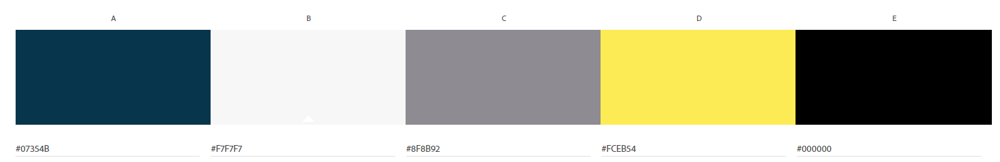

Chamber of commerce Argentina
Design
This page shows the colors that I will use to represent buenos aires commerce.
At first, the color "Dark Blue" (07354B) which will represent the background of the menus and the footer for the text highlighting, as well as the links on the page
The color "Dark Blue" (07354B) which will represent the background of the menus and the footer for the text highlighting, as well as the links on the page.
The color "GOLD" (FCEB54)will be used to highlight text boxes and give detail to photos, or items on the page that stand out as well as titles
The color "GOLD" (FCEB54)will be used to highlight text boxes and give detail to photos, or items on the page that stand out as well as titles
The color "black" (000000) I will use it for long text letters and subtitles
The color "gray" (8F8B92) I will use it for highlights, title backgrounds, box borders and text backgrounds.